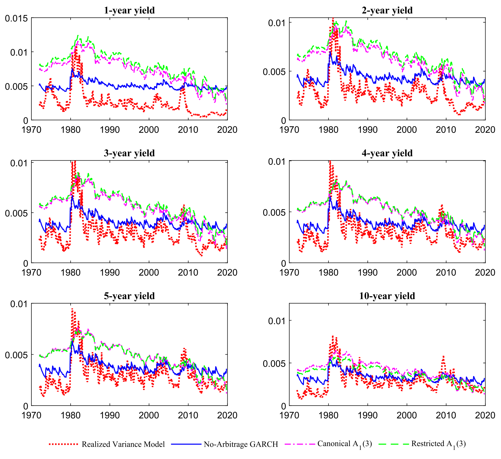
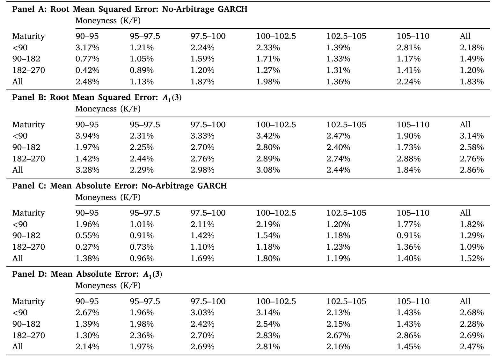
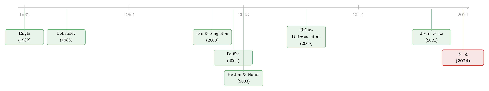

收益率曲线拟合得再好，也可能对波动率「充耳不闻」
本文读的是 Doshi, Jacobs & Liu (2024, Journal of Financial Economics)：把无套利仿射期限结构模型里的波动率因子，从「收益率因子水平的线性函数」换成一个 GARCH 过程（即「滞后平方扰动的函数」），债券价格仍有解析解，但对收益率波动率——尤其是长端——的拟合大幅改善。模型隐含波动率与已实现波动率的无条件相关性平均达到 65%（与 EGARCH 基准比则是 80%），而仿射随机波动率基准只有 47%（68%）；在国债期货期权定价上，新模型「完胜」标准 A₁(3) 模型。一句话：波动率因子的设定方式，才是胜负手。
1 一个「偏科」的好学生
先讲一个让做利率模型的人很尴尬的事实。
过去三十年，资产定价学界打磨出了一套极其精致的工具：仿射期限结构模型 (affine term structure model, ATSM)。它能把整条收益率曲线——从三个月到十年——拟合得相当漂亮，债券价格有解析解，估计起来也不算难。可一旦你换个角度，问它「收益率的波动率长什么样」，这位好学生立刻露了怯。
文献里早有大量证据指出：标准无套利期限结构模型隐含的波动率，和已实现波动率 (realized volatility) 或其他无模型估计对不上号 (Dai and Singleton, 2000, 2002; Duffee, 2002; Collin-Dufresne et al., 2009)。换句话说，它会拟合一阶矩，却拟合不好二阶矩。这是一个「偏科」的好学生：把收益率的均值答得很好，方差却答得一塌糊涂。
为什么会这样？这正是本文的起点，也是它最值得我们慢慢想清楚的一个点。
2 张力从哪来：均值和方差，骑在同一匹马上
要理解病根，得先看一眼这类模型是怎么写波动率的。
在最经典的设定里——也就是 Dai and Singleton (2000) 给出的那套 Aⱼ(3) 分类——状态变量 \(X_t\) 在风险中性测度下服从一个仿射扩散，而条件方差是状态变量水平的线性函数：
$$\sigma_{i,t}^2 = a_i + b_i' X_t$$
这个写法背后有它的道理。一大批文献都发现，利率高的时候波动率往往也高，收益率曲线曲率大的时候波动率也大 (Cox et al., 1985; Litterman and Scheinkman, 1991; Longstaff and Schwartz, 1992)。所以让方差「挂」在因子水平上，看起来顺理成章。
但麻烦也恰恰在这里。收益率的均值和方差，被同一组状态变量的水平驱动着。 你想让 \(X_t\) 把收益率曲线的形状解释好，又想让同一个 \(X_t\) 把波动率的时间变化解释好——这两件事互相打架。Joslin and Le (2021) 把这种张力说得很透：在无套利约束下，同时拟合一阶矩与二阶矩是这类模型内生的核心矛盾。
这不是「估计没估好」的问题，而是设定层面的硬约束。只要方差是因子水平的线性组合，一条收益率曲线的线性组合，在设计上就抓不住收益率的第二矩。
于是，一个自然的问题浮出水面：能不能让波动率不再骑在因子水平这匹马上？
3 关键一步：把 GARCH 的引擎装进无套利模型
本文的答案，简单到近乎「显然」，但效果出奇地好——把波动率因子写成一个 GARCH 过程。
时间序列的人对这套东西再熟悉不过：Engle (1982) 的 ARCH 和 Bollerslev (1986) 的 GARCH，是描述金融时间序列波动率聚集的看家本领。它的精髓在于，今天的方差不挂在某个「水平」上，而是由昨天的方差和昨天的平方扰动共同决定。
本文用一个三因子离散时间模型，物理测度 \(P\) 与风险中性测度 \(Q\) 下的状态变量分别服从
$$X_{t+1} = K_0^P + K_1^P X_t + \sqrt{\Sigma_{t+1}}\,\epsilon_{t+1}$$ $$X_{t+1} = K_0^Q + K_1^Q X_t + \sqrt{\Sigma_{t+1}}\,\epsilon_{t+1}$$
短端利率仍是仿射的：\(r_t = \rho_0 + \rho_1 X_t\)。真正的差别藏在条件协方差矩阵 \(\Sigma_{t+1}\) 上——它是对角阵，第 \(i\) 个对角元 \(\sigma_{i,t+1}^2\) 服从一个 GARCH(1,1) 动态：
把它和上一节那个 \(\sigma_{i,t}^2 = a_i + b_i' X_t\) 摆在一起对比，全文的「核心」就清清楚楚了：
左边（仿射基准）：方差 = 因子水平的线性函数。 右边（本文 GARCH）：方差 = 滞后平方扰动的函数。 看上去只是个技术细节，但作者反复强调——正是这一处设定，决定了模型在波动率维度上的成败。
而 \(\epsilon_{i,t}\) 又能从状态变量的观测里反推出来。把扰动写开，GARCH 递归变成可以从 \(X_{i,t}\) 的历史滤出的形式：
$$\sigma_{i,t+1}^2 = \omega_i + \beta_i \sigma_{i,t}^2 + \alpha_i \frac{\left(X_{i,t} - K_{0(i)}^P - K_{1(i,i)}^P X_{i,t-1}\right)^2}{\sigma_{i,t}^2}$$
为了简约，基准模型里只给第一个因子的波动率装上 GARCH 引擎（即对 \(i=2,3\) 令 \(\beta_i = \alpha_i = 0\)，方差退化为常数）。一个时变波动率因子，已经够用——这也是后面结果里最让人意外的地方。
4 它凭什么还能叫「无套利」：解析债券价格
读到这里，熟悉期限结构的读者一定会皱眉：GARCH 是出了名的「不好闭式求解」，你把它塞进债券定价，还能保留仿射模型那种解析解吗？
能——这正是本文技术上的漂亮之处，也是它和前人工作的分水岭。
通过设定一个本质仿射 (essentially affine, Duffee, 2002) 的风险价格，定价核取
$$m_{t+1} = \exp\!\left(-r_t - \tfrac{1}{2}\lambda_t'\lambda_t - \lambda_t'\epsilon_{t+1}\right), \qquad \lambda_t = \left(\sqrt{\Sigma_{t+1}}\right)^{-1}\!\left(\lambda_0 + \lambda_1 X_t\right)$$
\(n\) 期零息债券的价格可以写成一个对数线性 + 一个方差项的解析式：
$$\hat{P}_t^n = \exp\!\left(A_n(\Theta^Q) + B_n'(\Theta^Q) X_t + \sum_i C_{i,n}(\Theta^Q)\,\sigma_{i,t+1}^2\right)$$
注意指数里多出来的那一项 \(\sum_i C_{i,n}\sigma_{i,t+1}^2\)——这就是 GARCH 波动率因子留下的「指纹」。系数 \(A_n, B_n, C_{i,n}\) 满足一组递归关系：
$$A_n = -\rho_0 + A_{n-1} + B_{n-1}' K_0^Q + \sum_i\left(C_{i,n}\omega_i - \tfrac{1}{2}\log\left(1 - 2\alpha_i C_{i,n-1}\right)\right)$$ $$B_n = -\rho_1' + B_{n-1}' K_1^Q$$ $$C_{i,n} = \frac{B_{i,n-1}^2}{2\left(1 - 2\alpha_i C_{i,n-1}\right)} + \beta_i C_{i,n-1}$$
初始条件为 \(A_1 = -\rho_0,\ B_1 = -\rho_1',\ C_{i,1} = 0\)。这组递归之所以能闭合，关键在那个 \(\log(1 - 2\alpha_i C_{i,n-1})\) 项——它来自对正态扰动取期望时的高斯矩母函数，而 GARCH 把方差写成平方扰动的线性函数，恰好让这个期望仍然可解析地往前递推。于是 \(n\) 期收益率也是解析的：
$$\hat{y}_t^n = \mathcal{A}_n + \mathcal{B}_n' X_t + \sum_i \mathcal{C}_{i,n}\,\sigma_{i,t+1}^2$$
一句话总结这一节：本文保留了仿射模型的全部可解析性（tractability），却换上了 GARCH 的波动率心脏。 这正是它和 Heston and Nandi (2003) 的根本不同——后者用了非常相似的设定，却只在两周的零息债券价格上做了校准，无法真正考察对收益率波动率的建模能力。本文用一个长样本、一套完整的极大似然估计，把这件事做到了底。
5 数据与「真值」基准
要检验波动率拟合得好不好，先得有个「真值」。
收益率数据用月频连续复利零息债券收益率，期限覆盖 3 个月、6 个月，以及 1、2、3、4、5、10 年。其中 3 个月和 6 个月来自 FRED，1 到 5 年及 10 年来自 Gürkaynak, Sack and Wright (2007, GSW) 数据集。样本从 1971 年 11 月到 2019 年 10 月——之所以从 1971 年 11 月起步，是因为这是 10 年期收益率不间断可得的最早时点；而这段样本恰好把上世纪 80 年代初那段「货币实验」的高波动时期囊括进来。
波动率的「真值」用两个无模型基准：一是沿 Schwert (1989) 在股票文献里的做法，用月内日度收益率变化的平方和构造的已实现波动率；二是 EGARCH(1,1)。从 Table 1 可以读到，已实现波动率均值在 23–27 个基点 之间、随期限呈驼峰形，EGARCH 波动率均值在 28–35 个基点 之间——两者都呈正偏、超额峰度，且已实现波动率的持续性明显低于 EGARCH。
期权部分另取一套数据：来自芝加哥商品交易所 (CME) 的美国国债期货期权，样本 1988 年 5 月到 2016 年 6 月，标的为 5 年和 10 年期国债期货，期权到期日小于 270 天、价值状态 (moneyness) 在 90%–110% 之间。一个值得记住的细节：这些期货标的国债的票息在 2000 年 2 月前固定为 8%、之后为 6%，对期权定价至关重要。
6 主要结果：长端的胜负手
现在揭晓那个反转。
第一，波动率拟合大幅改善，尤其在长端。 模型隐含波动率与已实现波动率的无条件相关性，跨期限平均达到 65%；若以 EGARCH(1,1) 为基准则是 80%。基于模型隐含与无模型波动率之差算出的均方根误差 (RMSE) 跨期限平均约 20 个基点。在 4–5 年和 10 年这些长期限上，新模型把 80 年代初的高波动期、以及 80 年代中到 2000 年的低波动期都抓得不错。
图 5 把这一点画得很直观——模型隐含的一个月条件波动率，随时间的起伏与「真值」基准相当贴合，长端尤其如此。

Figure 5: presents the one-month conditional volatilities implied by
第二，它把基准模型甩开了一大截。 作为对照，作者估计了本质仿射的 A₁(3) 模型（Dai and Singleton, 2000; Duffee, 2002），以及一个状态变量动态与新模型尽可能接近、只在波动率设定上不同的「受限 A₁(3)」模型。这两个基准与已实现波动率（EGARCH）的相关性平均只有 47%（68%）。在收益率波动率 RMSE 上，无套利 GARCH 模型跨期限平均领先基准 40% 以上。所有模型都难以同时抓住 80 年代初的超高波动和其后的低波动，但 GARCH 模型明显更接近真相——A₁(3) 和受限 A₁(3) 在 80 年代中到 2000 年的低波动期会系统性地高估波动率。
作者特别澄清：这个差距不是离散时间 vs 连续时间造成的。GARCH 模型的优势纯粹来自「把方差写成滞后平方扰动的函数」而非「因子水平的函数」这一设定差异。
第三，波动率拟合的改善，没有以收益率（一阶矩）拟合的恶化为代价。 新模型的收益率 RMSE 只比两个随机波动率基准略高一点；而且它还很好地复现了 Campbell and Shiller (1991) 回归所刻画的债券风险溢价模式。这说明模型对收益率的条件均值与条件方差同时给出了像样的拟合——这恰恰是开篇那个「偏科好学生」做不到的事。
第四，也是最有说服力的样本外检验：给期权定价。 如果一个模型真把波动率抓对了，那它在「payoff 高度依赖波动率」的证券上就该占优。作者用国债收益率估出的参数去给国债期货期权定价，结果 GARCH 模型的表现「远远优于」(vastly superior) A₁(3) 模型。如表 11 所示，期权定价的 RMSE 在 GARCH 模型下显著更低。

Table 11: presents the RMSEs (root mean squared error) and the
注意这是个干净的「跨市场」验证：参数完全来自收益率市场，期权市场的数据没有进入估计，却被准确地定了价。
7 文献脉络
把这条线索捋一捋，会更清楚这篇论文站在哪。
源头是两支并行的河流。一支是波动率建模：Engle (1982) 的 ARCH 与 Bollerslev (1986) 的 GARCH，奠定了「方差由滞后平方扰动驱动」的范式。另一支是无套利期限结构：Duffie and Kan (1996) 的因子模型、Litterman and Scheinkman (1991) 对债券收益共同因子的刻画，到 Dai and Singleton (2000) 系统给出仿射随机波动率模型的 Aⱼ(3) 分类、Duffee (2002) 的本质仿射风险价格——这条线把收益率曲线拟合做到了极致，却也把「均值与方差共用因子水平」这个病根固化了下来。

两河交汇处，早有人试过。Heston and Nandi (2003) 用了和本文几乎一样的两因子 GARCH 期限结构设定，可惜只在两周样本上做校准，没能真正考察波动率建模。Ghysels et al. (2014) 让模型在 \(Q\) 下保持高斯、在 \(P\) 下用 GARCH——而本文在两个测度下用同一套动态。沿着「如何在无套利框架内建模利率波动率」这条主线，还站着 Collin-Dufresne and Goldstein (2002) 与 Collin-Dufresne et al. (2009) 的非张成随机波动率 (unspanned stochastic volatility)，以及 Creal and Wu (2015) 关于张成 vs 非张成的取舍；不过 Joslin (2018)、Joslin and Konchitchki (2018) 指出非张成约束过度限制了模型其他维度并被数据拒绝，Joslin and Le (2021) 则把无套利约束与一二阶矩之间的张力讲透。本文不去站张成/非张成的队，而是另辟一径——它的识别特征就是那个参数化的 GARCH 假设。在它之后，Realdon (2022) 和 Hansen (2023) 也开始研究带 GARCH 潜在因子的仿射期限结构模型。
（关于国债收益率的风险价格与数量如何拆解，可参见《风险的价格与数量：拆开中美国债的「风险-收益之谜」》；关于结构模型如何被用于期权定价的另一种思路，可参见《把结构模型「蒸馏」成一张查找表：深度代理与期权定价》。）
8 评论与延伸（Q&A + 研究方向）
(a) 几个可能的疑问
Q：GARCH 模型和仿射随机波动率模型，关键区别到底在哪？
只有一处，但是要命的一处：波动率的信息来源。仿射模型把条件方差写成因子水平的线性函数 \(\sigma_{i,t}^2 = a_i + b_i' X_t\)；GARCH 模型把它写成滞后方差加滞后平方扰动 \(\sigma_{i,t+1}^2 = \omega_i + \beta_i\sigma_{i,t}^2 + \alpha_i\epsilon_{i,t}^2\)。前者让均值和方差共用「水平」这个信息，互相掣肘；后者把方差解放出来，让它去听「平方扰动」的话。本文设计的「受限
A₁(3)」基准把状态变量动态调到和新模型尽可能一致，唯一差别就是这个——所以业绩差距能干净地归因到波动率设定上。
Q：离散时间 GARCH 怎么还能保住解析债券价格？「无套利」会不会打折扣？
不打折。无套利来自一个合法设定的定价核 \(m_{t+1}\)，债券价格是 \(E_t[m_{t+1}P_{t+1}^{n-1}]\) 的递归。之所以仍有闭式解，是因为扰动是正态的、方差又是平方扰动的线性函数，对正态变量取指数期望（矩母函数）后仍是可往前递推的形式——那个 \(-\tfrac{1}{2}\log(1-2\alpha_i C_{i,n-1})\) 项就是这一步的产物。所以「无套利」和「解析解」在这里并不矛盾。
Q：张成 vs 非张成波动率之争，这篇站哪边？
它有意不站队。作者明说，本文业绩不必然对张成/非张成的成本收益有结论性意义；它的识别特征是 GARCH 这个参数化假设本身。Creal and Wu (2015) 发现张成模型更会拟合曲线、非张成更会拟合波动率，而本文给出了第三条路：在张成框架里，靠改写波动率的「发动机」也能把波动率拟合做上去。
Q：基准模型只给第一个因子加 GARCH，会不会太省了？
出人意料地够用。仅一个时变波动率因子，模型隐含波动率与已实现波动率的平均相关性就到了 65%。作者也在稳健性里试了两个时变波动率因子，以及带杠杆效应的 Heston-Nandi (2000) 式扩展，但后者并未改善拟合——直觉是国债收益率数据里的偏度本就有限，不像股指期权那样需要杠杆项。
Q：波动率拟合变好，是不是偷偷牺牲了收益率本身的拟合？
没有。新模型的收益率 RMSE 只比随机波动率基准略高，而且 Campbell and Shiller (1991) 回归所刻画的风险溢价模式拟合得很好。这正是论文标题之外的隐含主张：一二阶矩的张力，可以靠换波动率设定来缓解，而不必在两者间二选一。
Q：用国债估的模型去给期权定价，为什么算一个有力的检验？
因为它是真正的样本外、跨市场验证。期权 payoff 对波动率极其敏感，而估计参数完全来自收益率市场、期权数据没进似然函数。如果波动率被抓错了，期权价格立刻穿帮。GARCH 模型在这里「完胜」
A₁(3)，等于从第三方市场给波动率拟合盖了个章。
(b) 几个可能的研究问题与提案
1. 把 GARCH 波动率因子搬到公司债 / 信用利差期限结构
【经济故事】信用利差的波动率聚集比国债更剧烈（违约风险的非线性、流动性冲击），而现有信用期限结构模型大多沿用仿射随机波动率，同样会「偏科」。把本文的「方差 = 滞后平方扰动」引擎装进信用利差曲线，或许能同时拟合利差水平与利差波动率。 【可行性】中。数据有
TRACE日度成交可构造已实现波动率、Markit的 CDS 期限结构可做无套利校准；难点在违约强度与回收率的可识别性，以及流动性成分的剥离。doable，但需要先把「哪一个因子该带 GARCH」论证清楚。
2. 外资持有人结构与国债收益率波动率
【经济故事】外国官方与私人投资者的持有占比变化，可能系统性地改变国债二阶矩——危机期「资本外逃」式的抛售会放大平方扰动。可以在本文框架里，把 GARCH 的 \(\alpha\)（ARCH 项权重）做成外资持有强度的函数，检验「谁持有」是否改变了波动率的生成机制。 【可行性】中。
TIC数据（美国国际资本流动）按月给出外资持有，可与 GSW 收益率匹配；识别上的难点是持有结构的内生性，需要用供给侧工具（如发行节奏）或事件冲击。
3. 把这套模型隐含波动率拿去做流动性研究
【经济故事】本文给出了一个干净的、无模型外的条件波动率估计。一个自然延伸是：模型隐含波动率与市场观测到的
MOVE指数（或国债买卖价差）之间的缺口，是不是流动性溢价的代理？当二者背离时，是否预示做市能力收紧？ 【可行性】高。所需材料都是公开的（GSW 收益率、MOVE、Treasury 买卖价差），本文的估计可直接复用；识别上属于预测性回归，门槛不高，但要小心生成回报变量 (generated regressor) 的标准误。
4. 杠杆效应在信用市场的回归
【经济故事】本文发现国债数据里加 Heston-Nandi (2000) 的杠杆项没用，因为偏度有限。但信用市场天然有强烈的非对称性（坏消息冲击远比好消息剧烈）。把杠杆项重新引入信用利差的 GARCH 期限结构，可能正好派上用场。 【可行性】中。需要高质量的 CDS 或公司债利差时间序列；技术上是本文模型的直接扩展，挑战在于估计的数值稳定性与杠杆参数的识别。
我的判断
先说贡献。这篇论文的可贵之处，在于它用一个「小到几乎不像创新」的改动，撬动了一个困扰文献二十年的老问题——而且做得极其干净。它没有引入额外的非张成约束、没有牺牲解析解、没有恶化收益率拟合，仅仅把波动率因子的「燃料」从因子水平换成滞后平方扰动，就把长端波动率拟合提升了 40% 以上，还顺手通过了期权定价这个跨市场检验。把「受限 A₁(3)」设计成只在波动率设定上有别的对照组，是全文最让我信服的一笔——它让因果归因变得无可争辩。
再说担忧。其一，识别上，GARCH 的波动率是从状态变量的滤波残差里反推的，而状态变量本身是潜变量，整条链路依赖卡尔曼滤波 (Kalman filter) 与本质仿射风险价格的设定——如果滤波对模型设定敏感，那 65% 这个相关性里有多少是「真信号」、多少是设定带来的，值得再追问。其二，作者坦言所有模型在 80 年代初货币实验那段都吃力，这提醒我们：GARCH 抓的是「常态下的波动率聚集」，对结构性断点（regime shift）仍力不从心——这或许正是 Dai et al. (2007) 那类区制转换模型的用武之地。
后续我最想看到的，是把这套引擎搬出国债、搬进信用市场：公司债利差的波动率聚集更猛、非对称更强，正是 GARCH 该大显身手的地方；而那里也恰恰是张成/非张成之争尚未尘埃落定、外资持有人结构正在快速变化的战场。如果「波动率因子的设定才是胜负手」这个论断在信用市场依然成立，那它的分量，会比在国债上重得多。
参考文献
Bollerslev, T. (1986). Generalized autoregressive conditional heteroskedasticity. Journal of Econometrics 31(3), 307–327.
Collin-Dufresne, P., Goldstein, R.S. (2002). Do bonds span the fixed income markets? Theory and evidence for unspanned stochastic volatility. Journal of Finance 57(4), 1685–1730.
Collin-Dufresne, P., Goldstein, R.S., Jones, C.S. (2009). Can interest rate volatility be extracted from the cross section of bond yields? Journal of Financial Economics 94(1), 47–66.
Cox, J.C., Ingersoll, J.E., Ross, S.A. (1985). A theory of the term structure of interest rates. Econometrica 53(2), 385–407.
Creal, D.D., Wu, J.C. (2015). Estimation of affine term structure models with spanned or unspanned stochastic volatility. Journal of Econometrics 185(1), 60–81.
Dai, Q., Singleton, K.J. (2000). Specification analysis of affine term structure models. Journal of Finance 55(5), 1943–1978.
Dai, Q., Singleton, K.J. (2002). Expectation puzzles, time-varying risk premia, and affine models of the term structure. Journal of Financial Economics 63(3), 415–441.
Doshi, H., Jacobs, K., Liu, R. (2024). Modeling volatility in dynamic term structure models. Journal of Financial Economics 161, 103926.
Duffee, G.R. (2002). Term premia and interest rate forecasts in affine models. Journal of Finance 57(1), 405–443.
Duffie, D., Kan, R. (1996). A yield-factor model of interest rates. Mathematical Finance 6(4), 379–406.
Engle, R. (1982). Autoregressive conditional heteroscedasticity with estimates of the variance of United Kingdom inflation. Econometrica 50(4), 987–1007.
Ghysels, E., Le, A., Park, S., Zhu, H. (2014). Risk and return trade-off in the U.S. Treasury market. Working Paper, University of North Carolina.
Gürkaynak, R.S., Sack, B., Wright, J.H. (2007). The U.S. Treasury yield curve: 1961 to the present. Journal of Monetary Economics 54(8), 2291–2304.
Hansen, A.L. (2023). A joint model for the term structure of interest rates and realized volatility. Journal of Financial Econometrics 21(4), 1196–1227.
Heston, S.L., Nandi, S. (2000). A closed-form GARCH option valuation model. Review of Financial Studies 13(3), 585–625.
Heston, S.L., Nandi, S. (2003). A two-factor term structure model under GARCH volatility. Journal of Fixed Income 13(1), 87–95.
Jacobs, K., Karoui, L. (2009). Conditional volatility in affine term-structure models: Evidence from Treasury and swap markets. Journal of Financial Economics 91(3), 288–318.
Joslin, S. (2018). Can unspanned stochastic volatility models explain the cross section of bond volatilities? Management Science 64(4), 1707–1726.
Joslin, S., Konchitchki, Y. (2018). Interest rate volatility, the yield curve, and the macroeconomy. Journal of Financial Economics 128(2), 344–362.
Joslin, S., Le, A. (2021). Interest rate volatility and no-arbitrage term structure models. Management Science 67(12), 7391–7416.
Litterman, R.B., Scheinkman, J. (1991). Common factors affecting bond returns. Journal of Fixed Income 1(1), 54–61.
Longstaff, F.A., Schwartz, E.S. (1992). Interest rate volatility and the term structure: A two-factor general equilibrium model. Journal of Finance 47(4), 1259–1282.
Realdon, M. (2022). Matching daily yields of all maturities and their volatility. Working Paper, Brunel University London.
Schwert, G.W. (1989). Why does stock market volatility change over time? Journal of Finance 44(5), 1115–1153.